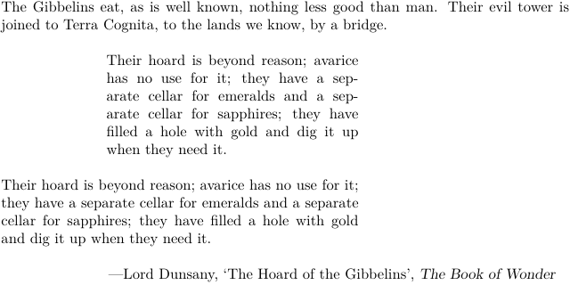

Waiting for more content.
Please refer to:
The instances of \startnarrower ... \stopnarrower are used for text with a smaller width than the main text. It can be indented on one or both sides.
-
The Gibbelins eat, as is well known, nothing less good than man. Their evil tower is joined to Terra Cognita, to the lands we know, by a bridge. \blank[line] \definenarrower[MyNarrow][left=2cm,right=4cm] \startMyNarrow[left,right] Their hoard is beyond reason; avarice has no use for it; they have a separate cellar for emeralds and a separate cellar for sapphires; they have filled a hole with gold and dig it up when they need it. \stopMyNarrow \blank[line] \startMyNarrow[right] Their hoard is beyond reason; avarice has no use for it; they have a separate cellar for emeralds and a separate cellar for sapphires; they have filled a hole with gold and dig it up when they need it. \stopMyNarrow \blank[line] \rightaligned{—Lord Dunsany, \quote{The Hoard of the Gibbelins}, \emph{The Book of Wonder}}
- 